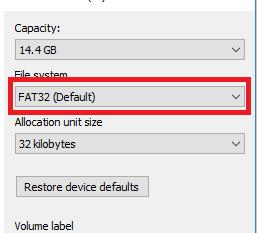

25 Mei 2023
Programming ESP32 Web Server Hosting from SDcard
Server web atau peladen web adalah perangkat lunak server, atau perangkat keras yang didedikasikan untuk menjalankan perangkat lunak ini, yang dapat memenuhi permintaan klien di World Wide Web. Server web dapat, secara umum, berisi satu atau lebih situs web. Wikipedia
MicroSD adalah kartu memori non-volatile yang dikembangkan oleh SD Card Association yang digunakan dalam perangkat portable. Saat ini, teknologi microSD sudah digunakan oleh lebih dari 400 merek produk serta dianggap sebagai standar industri de-facto. Wikipedia
Alat dan Bahan
ESP32-Wroom board (board lain yang sejenis ESP32DevKit, ESP8266, dan lainnya)
SDcard Module -> 1
MicroSD card -> 1
Kabel Jumper
Kabel data micro USB
software :
Visual Studio Code dengan Extension PlatformIO
Langkah Percobaan
1. Buat Project baru di PlatformIO VScode
2. Pilih Board sesuai dengan seri board yang digunakan
3. pilh farmwork Arduino
4. Download Library untuk coding program:
ESPAsyncWebServer link download
AsyncTCP (jika menggunakan ESP32) link download
ESP8266AsyncTCP (jika menggunakan ESP8266) link download
5. Setelah download, extract file, dan copy file library ke folder lib pada wokspace
6. Tulis Coding pada file main.cpp
7. hubungkan ESP32 ke PC via Kabel data, Build Program, selanjutnya Upload Program
8. Siapkan Micro SDcard, Format SD card dengan File system FAT32

9. Copy File HTML, CSS, JS ke SD card, masukan Micro SDcard ke SDcard Module
10. Buka Serial Monitor, Tekan tombol reset ESP32Board
11. Copy IP Addres dan buka di browser
Lihat Video untuk tutorial lengkap:
Get Script Program in Here